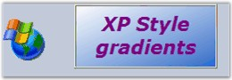

The GradientLabel class provides a way to create fancy and appealing labels in your forms.
The GradientLabel class is fully compatible with the Windows Forms label that it derives from and gets most of its uniqueness from the BrushInfo class that is used for the GradientLabel.BackgroundColor property.
The GradientLabel.Border3DStyle is another property that can specify the look and feel of the GradientLabel.

Figure 600: GradientLabel Control
The .NET framework provides a label control typically used to provide descriptive text for a control. The Essential Tools' GradientLabel control provides an easy way to display labels with attractive shades and backgrounds.
 Note: All the other functions of the
GradientLabel is the same as the System.Windows.Forms.Label control in the
Windows Forms library.
Note: All the other functions of the
GradientLabel is the same as the System.Windows.Forms.Label control in the
Windows Forms library.
See Also
 Features
Features